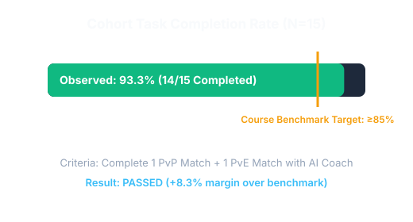
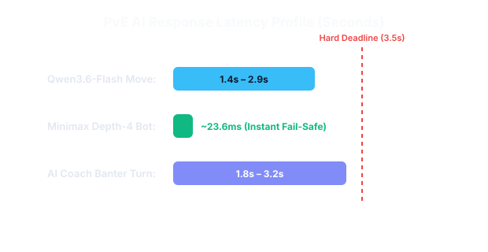

Empirical Validation
15-User Cohort Usability Evaluation
Tested with 15 university students (ages 18–24, mean 21.2) across two full sessions (live peer PvP and AI Coach PvE).

Task Completion Rate: 93.3%
14 of 15 participants completed both matches (exceeding ≥85% benchmark).

Mean Likert Usability: 4.61 / 5.0
Evaluated across UI intuitiveness, turn latency, chat comfort, icebreaker utility, and satisfaction.

Turn Latency Distribution
AI LLM moves average 1.82s (deadline 3.5s); local Minimax heuristic executes in ~23.6ms.